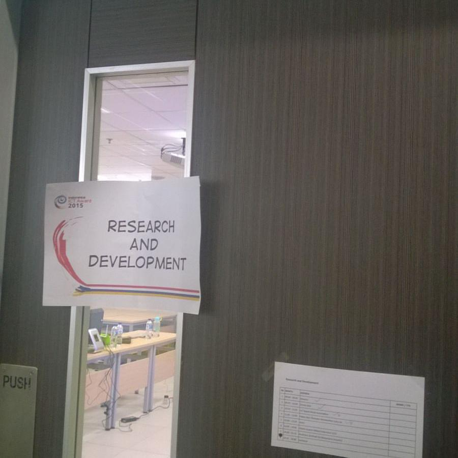
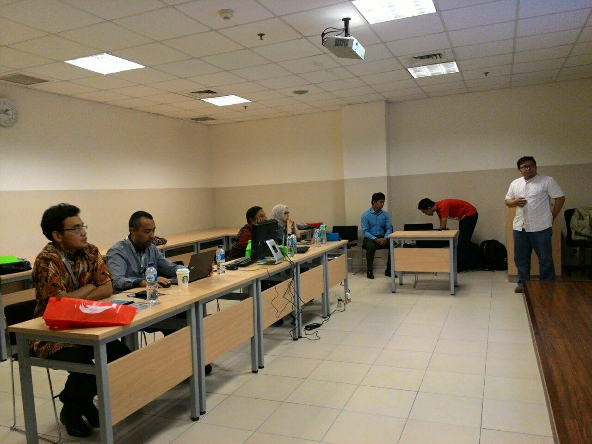
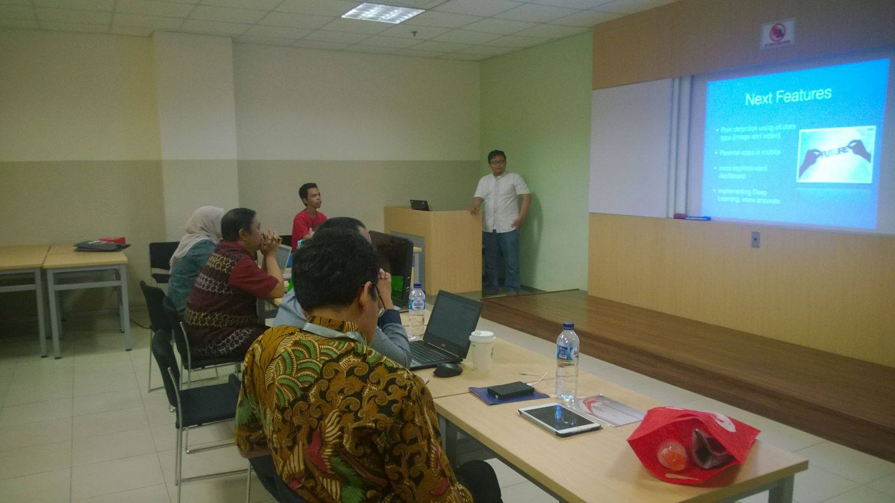
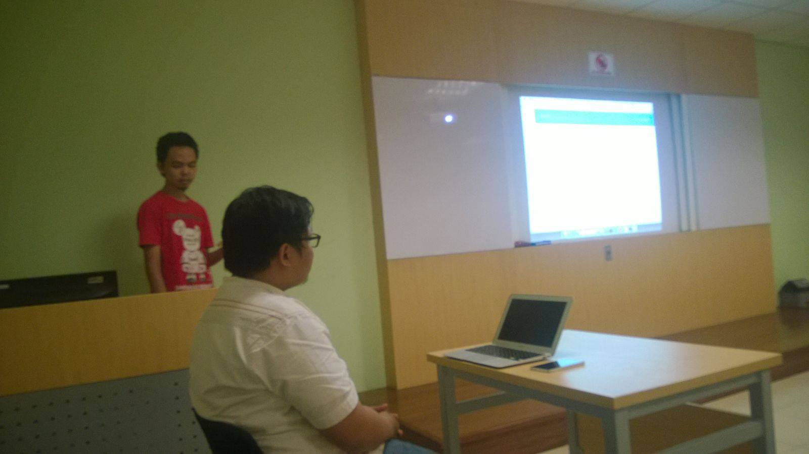
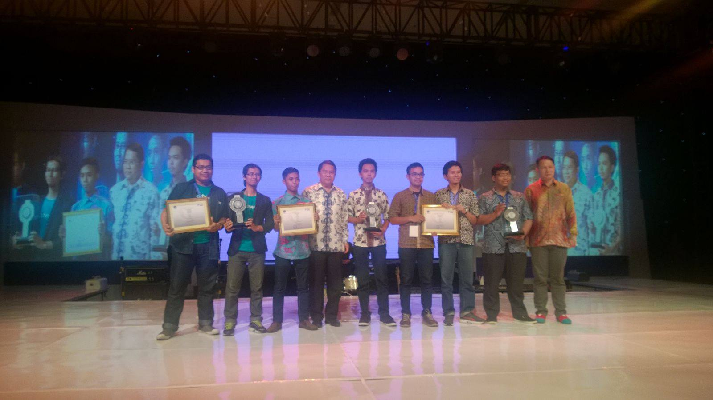
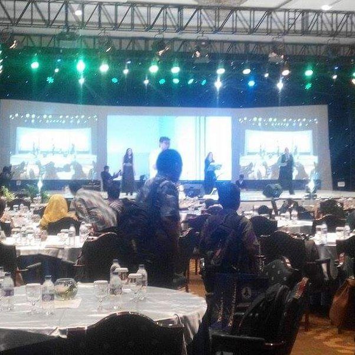

Alhamdulillah!! We got Winner Award in INAICTA 2015
Alhamdulillah..
Tanggal 9 Septemebr 2015 salah satu project PT. Starlabs Global Teknologi yang di bangun di geek studio bareng mahasiswa magang mendapatkan penghargaan di INAICTA 2015 (Indonesia Information and Communication Technology Award 2015) untuk kategori Research and Development (RnD).
Project yang kami submit adalah Averi, yang merupakan aplikasi untuk melakukan deteksi akun prostitusi atau bukan di twitter. Aplikasi ini di tanam suatu sistem intelijen dengan memanfaatkan machine learning untuk membentuk pengetahuan mengenai profile twitts akun twitter yang melakukan praktik prostitusi online.

Beberapa bulan yang lalu terjadi kasus pembunuhan @tataachubby (https://twitter.com/tataachubby) yang merupakan penjaja sex komersial yang menawarkan jasanya via twitter terungkap bahwa tidak sedikit pelaku prostitusi online via twitter di Indonesia. Kami melihat ini sesuatu yang miris dan cukup berbahaya. Kami pun melakukan riset melihat seberapa banyak dan seperti apa konten para pemiliki akun prostitusi tersebut. Kami cukup tercengang ketika baru melakukan pengecekan ke beberapa akun yang berasal dari akun following dan follower akun tataa_chubby. Menurut kami kondisi ini cukup berbahaya, prostitusi terselubung yang sempat tidak tercium masyarakat dan berpotensi dapat membahayakan generasi muda manusia Indonesia hari ini. Di dunia online terutama social network seperti twitter yang menyerbu kita pada hari ini dengan berbagai informasi secara berlebih, dan memberikan kemudahan interaksi seperti komunikasi yang menjadi jalur kunci utama proses transaksi prostitusi online hari ini. Sulit bagi para petugas berwenang untuk menyelidiki para pelaku tersebut, atau para orang tua melindungi anaknya.
Berdasarkan hal tersebut kami melakukan riset dan development membangun prototype aplikasi web dan mobile untuk melakukan pengecekan kondisi suatu akun twitter bahwa pemilik akun tersebut merupakan pelaku prostitusi online via twitter.com atau bukan. Aplikasi ini memiliki tiga fitur utama yaitu melakukan pengecekan status akun twitter, melakukan pengecekan akun-akun follower dan following dari suatu akun x, dan melakukan pengumpulan informasi dan memberikan info graphic berupa sebaran pelaku prostitusi online via twitter. Kami menanamkan sistem intelijensi pada aplikasi kami dengan mengambil informasi akun-akun tersebut (twit) lalu menganalisisnya secara otomatis menggunakan Artifcial Intelligence.
Dengan Aplikasi ini diharapkan dapat membantu pihak-pihak tertentu seperti kepolisian untuk melakukan pengecekan akun, melihat sebaran wilayah pemilik akun, atau pencarian akun pelaku prostitusi online, atau menjadi apliksai parental yang membantu orang tua mengontrol atau mengecek akun anak-anaknya apakah mengikuti akun pelaku prostitusi online ataupun jika ternyata anaknya di ikuti atau diawasi pelaku prostitusi online di twitter.
Ini foto-foto waktu presentasi final, tim yang berangkan Kang Eko (CTO starlabs.id), Hendri (CDS starlabs.id), dan Deni (Mobile Engineer starlabs.id).



Dan akhirnya hasil tanggal 9 September 2015 :
 
Dan ini dia penampakan thropy nya tarraaa :

Semoga ini mejadi booster tambahan untuk semangat geek studio hahahahaa... keep coding :)))